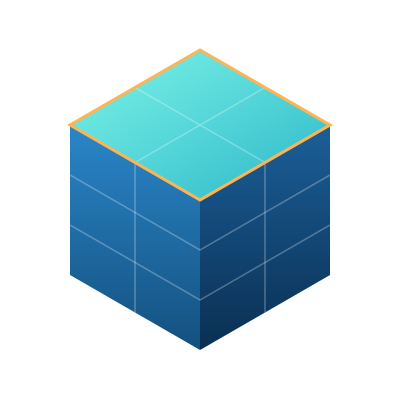

From raw satellite data to analysis-ready insight
2026-10-13
Why data cubes?
Climate data arrives in many formats, resolutions and projections.
Climate data arrives in many formats, resolutions and projections.
A data cube gives one consistent grid: time × latitude × longitude.
However, not every EUMETSAT product or authenticated API supports efficient remote reading, so temporary downloads are the more reliable starting point.
40+
years of data
1 km
spatial resolution
3
variables

img/cube.svg with your own figureUse background-image="img/your-photo.jpg" on any slide. Lower background-opacity so the text stays readable.
Running the code
#!/usr/bin/env python3
"""Create a compressed, sharded Zarr v3 cube from interim NetCDF files."""
from pathlib import Path
import shutil
import xarray as xr
import zarr
from packaging.version import Version
if Version(zarr.__version__) < Version("3.0"):
raise RuntimeError(
f"Zarr >= 3.0 is required, but {zarr.__version__} is installed. "
"Run this script with the project environment, for example: "
"`uv run python code/build_zarr_cube.py`."
)
from zarr.codecs import BloscCodec
ROOT = Path(__file__).resolve().parents[1]
INTERIM = ROOT / "data" / "interim"
OUTPUT = ROOT / "data" / "zarr" / "metref_sample_1month.zarr"
# Intended access: time slices / maps. Tune after benchmarking your real data.
INNER_CHUNKS = {"time": 1, "lat": 256, "lon": 256}
SHARD_CHUNKS = {"time": 10, "lat": 512, "lon": 512}
COMPRESSOR = BloscCodec(cname="zstd", clevel=5, shuffle="shuffle")
def main() -> int:
files = sorted(INTERIM.rglob("*.nc"))
if not files:
raise FileNotFoundError(f"No NetCDF files found under {INTERIM}")
print(f"Opening {len(files)} NetCDF files")
ds = xr.open_mfdataset(
files,
combine="by_coords",
parallel=False,
chunks="auto",
engine="h5netcdf",
data_vars="minimal",
coords="minimal",
compat="override",
)
# Use the input's actual dimension names; rename here if needed, e.g. y/x.
missing = (set(INNER_CHUNKS) | set(SHARD_CHUNKS)) - set(ds.dims)
if missing:
raise ValueError(
f"Expected dimensions {sorted(missing)} are missing. "
f"Found {dict(ds.sizes)}; update the chunk settings or rename dimensions."
)
if "time" in ds.coords:
ds = ds.sortby("time")
# Dask writes one complete shard task at a time. Each shard holds multiple
# independently compressed inner chunks, reducing object/file counts.
ds = ds.chunk(SHARD_CHUNKS)
encoding = {}
for name, da in ds.data_vars.items():
if da.dtype.kind not in "iufcb": # leave strings/objects to xarray defaults
continue
dims = da.dims
inner = tuple(min(INNER_CHUNKS.get(dim, da.sizes[dim]), da.sizes[dim]) for dim in dims)
shard = tuple(min(SHARD_CHUNKS.get(dim, inner[i]), da.sizes[dim]) for i, dim in enumerate(dims))
encoding[name] = {
"chunks": inner,
"shards": shard,
"compressors": [COMPRESSOR],
}
OUTPUT.parent.mkdir(parents=True, exist_ok=True)
if OUTPUT.exists():
shutil.rmtree(OUTPUT)
print(ds)
ds.to_zarr(
OUTPUT,
mode="w",
zarr_format=3,
consolidated=False,
encoding=encoding,
align_chunks=True,
)
print(f"Wrote Zarr v3 cube: {OUTPUT}")
# Validate metadata and compute only a tiny sample, not the full cube.
check = xr.open_zarr(OUTPUT, consolidated=False)
var = next(iter(check.data_vars))
sample = check[var]
indexers = {dim: slice(0, 1 if dim == "time" else 64) for dim in sample.dims}
value = sample.isel(indexers).mean().compute().item()
print(f"Validation OK: {var} sample mean = {value}")
ds.close()
check.close()
return 0
if __name__ == "__main__":
raise SystemExit(main())